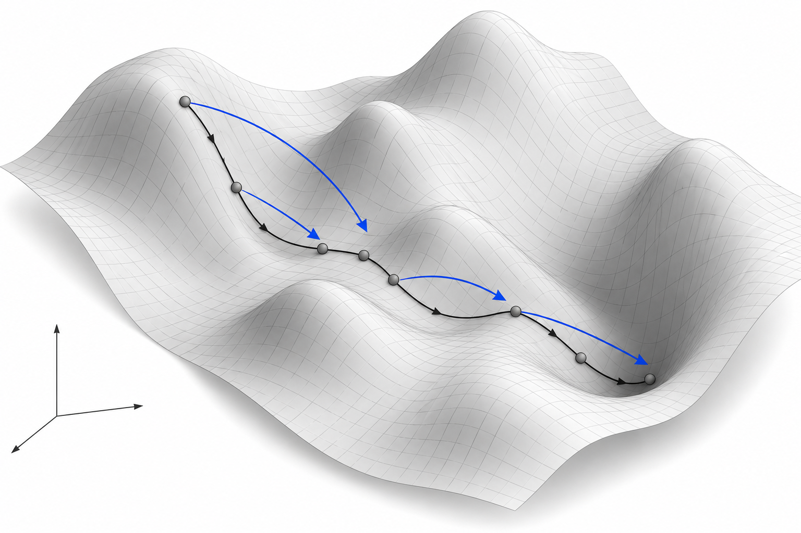

Research note · Draft · September 29, 2026
OIL, learned flows, and the search for better optimizers
If I have already solved thousands of inverse problems, what should the next solver remember? It could remember where good solutions tend to be. It could remember the directions taken by previous optimizers. Or it could learn when to keep refining a solution and when to search somewhere else.
Those possibilities led us from optimizer-in-the-loop training (OIL) to a broader project we called OIL-matching: learning from optimization trajectories, connecting that learning to flow matching, and eventually asking how to improve the decisions around a local optimizer. The experiments changed the emphasis. Learned starting points have been useful; replacing repeated exact optimization with a learned field has been much harder.
We developed our optimizer-field derivations before encountering the related gradient-flow-matching literature. Discovering afterward that a closely related idea was already being explored for neural-network optimization was a surprise—and gave us a new connection through which to understand our own experiments.

Why a good parameter prediction can make a bad simulation
Suppose we observe a trajectory \(y\) and know the differential equation, but not its parameters \(\theta\). A simulator \(\Phi\) turns a parameter guess into a trajectory. Trajectory matching, or TM, adjusts the guess to reduce the discrepancy with the observation. Writing \(m\) for the number of observed scalar values:
Our main example was the generalized Lotka–Volterra system, a model of interacting populations. With six species it has 42 parameters: six growth rates and 36 interactions. Each clean trajectory was observed at 101 times. A message-passing neural network, or MPNN, could quickly map those observations to parameters; bounded L-BFGS-B could refine a guess using numerical simulation and gradients.
The difficulty is that parameter distance and trajectory distance measure different things. Some combinations of parameters barely change the observed behavior. Other combinations change it dramatically. This is the geometry of sloppy parameter sensitivities: a prediction can look close in parameter RMSE yet move in a sensitive direction and produce an inaccurate or invalid simulation. Conversely, several parameter vectors can fit the same observations well.
This suggests teaching the predictor about what happens after its output enters the simulator and optimizer. Synthetic training data provide generating-parameter labels, but the deployed optimizer sees observations, bounds, and the objective. The generating parameters are an evaluation reference; they are not an available test-time destination.
OIL: learning an initialization that can be refined
OIL trains a network to produce a useful starting point for finite optimization. In the current implementation, the network predicts \(\theta^{(0)}=g_\psi(y)\), then training applies exactly five differentiable trajectory-matching updates. The loss supervises the initial parameters, the refined parameters, and the refined simulation:
Backpropagation passes through those five updates and the simulator to the initializer. The initial parameter term preserves a useful prediction; refined parameter supervision limits drift along weakly constrained directions; the trajectory term rewards a refined solution that reproduces the observation. The implemented losses have equal outer weights after scaling: block-standardized parameter losses and a scaled asinh–Huber trajectory loss. They are not three unscaled MSEs.
At inference, the predictor makes one estimate and a separate, budgeted L-BFGS-B solve refines it. The five training updates are absent. Training uses safeguarded updates in prior-logit coordinates; the inference optimizer uses bounded native parameters. OIL therefore learns compatibility with refinement without assuming that the inner training procedure has converged.
This sits beside semi-amortized inference, learning to warm-start optimization, and differentiable optimization layers. The shared idea is to train a predictor with the downstream computation in view. Ordinary trajectory fine-tuning (FT) is a useful control: it supervises the predictor's output without differentiating through the optimizer unroll.
The extra unroll is a hypothesis about useful training, not an automatic advantage. In our later authenticated 100,000-system S6 comparison, raw MPNN, matched FT, and true OIL had simulation validity of 91.929%, 99.089%, and 99.061%, respectively. Their pooled native parameter RMSEs were 0.060463, 0.061159, and 0.065164. Both tuning procedures improved validity, while OIL carried the larger parameter cost. Across the available controls, matched FT was often the stronger initializer.
There is also a historical correction behind that wording: an earlier result labeled “OIL” was subsequently identified as trajectory-fine-tuned MPNN plus TM. I use the corrected method identities here. The evidence supports learned initialization plus exact refinement more broadly than it supports a unique advantage of OIL training.
OIL-matching: can we learn what the optimizer does?
OIL-matching is our name for the investigation that followed, rather than one published algorithm with a single objective. If an optimizer repeatedly solves related inverse problems, its intermediate states become training data. We recorded screened initial guesses, accepted L-BFGS-B iterates, losses, exact gradients, and evaluation counts. The S6 training portion alone contained 280,000 paths and about 5.88 million stored states.
The first student took an observed trajectory, a current parameter guess, and a step index, then predicted a transformed loss gradient. Robust signed transformations helped with the enormous range of gradient magnitudes. At inference we decoded the prediction, took a projected step, and repeated. This is supervised gradient distillation: solver labels are targets, and training does not backpropagate through the recorded optimizer.
Three quantities that look like arrows in the illustration are different:
- A loss gradient describes local sensitivity at the current parameter.
- An optimizer update also reflects its controller. L-BFGS-B uses curvature history, line search, and active bounds.
- A transport velocity moves a state along a chosen source-to-target path, which can differ substantially from loss descent.
Learning the first quantity does not reconstruct the second. Even an exact gradient plugged into a simple fixed-step rule need not follow L-BFGS-B. That distinction eventually led us to test endpoint transport and a genuinely memoryless teacher separately.
The connection to conditional flow matching
In the endpoint experiment, we paired an initializer \(u_0\) with a target \(u_1\) in normalized parameter coordinates. The target was either a long-run TM endpoint or the generating parameters. We sampled positions on the straight connecting path and trained a velocity model:
This is the direct connection to Flow Matching and Rectified Flow. At inference we start at \(u_0\) and integrate the learned field to terminal transport time. The flow can learn a route toward an endpoint without reproducing the winding optimizer path. Our endpoint model also used a terminal-consistency loss; prefix variants could condition on a few observed optimizer updates.
Only after developing our own derivations did we encounter Gradient Flow Matching for Learning Update Dynamics in Neural Network Training. It was a surprising parallel: related ideas were already being used to forecast neural-network weight evolution from observed-prefix changes and endpoint information. Our setting instead infers mechanistic parameters from observed trajectories. We cite this work as a connection we discovered later, not as the starting point for our original derivation; its results in neural-network optimization do not guarantee the same outcome for our inverse problems.
The marginalization story needs care. Under squared regression, the ideal prediction is the conditional mean \(\mathbb{E}[V\mid X]\), where \(V\) is the target velocity and \(X\) collects the supplied inputs. With complete observations and current parameters, the exact trajectory-loss gradient is deterministic. Four initializers do not by themselves make its labels contradictory. Harmful averaging can arise when the encoder aliases distinct problems, relevant history is missing, or deployment visits states poorly covered by training.
Nor does the continuity equation supply an optimization energy. It describes conservation of probability mass. Exact gradient flow, \(\dot{\theta}=-\nabla_\theta L\), decreases a static loss:
A generic learned transport field has no such guarantee. Our projected-field visualizations showed heterogeneous directions, but they did not establish that lost high-frequency information, curl, or mode collapse caused the performance gap.
Giving the learned field a simpler job
We tried to remove the obvious difficulties. The autonomous experiment used one fixed initializer, omitted time and step inputs, and learned bounded actions from a memoryless exact-gradient teacher. The teacher masked outward boundary motion, capped step length, and checked destination validity. Its final corpus contained 5,000 systems and 100,000 validated transitions. Each complete 20-step teacher path cost 21 exact value-and-gradient evaluations.
The student received only the trajectory and current parameters. A matched neural control used the same capacity to predict the teacher's terminal point in one call. This was a deliberately small test of whether local action learning added anything beyond endpoint supervision.
Choosing the closest initializer during training was another proposed simplification. In the available four-start bank, start0 was already closest to its own long-run TM endpoint in 98.8% of cases. We therefore ran the deployable fixed-start simplification. We did not train a closest-of-four router, and target-aware selection remains unavailable at inference.
Two recent papers helped refine these questions. Explorative Modeling chooses the best current model generation among several candidates during training; it is more than geometric nearest-initializer selection. Beckmann Transport Models studies autonomous transport under explicit assumptions, with trajectory-dependent arrival times. Our bounded discrete-action experiment explored time independence, but did not implement its transport construction or inherit its convergence claims.
Useful local directions, fragile repeated inference
The original learned-gradient rollout improved parameter recovery but retained only 67.275% valid trajectory replays after 20 steps. Endpoint supervision repaired much of that problem. On matched targets, one-call direct predictors generally had better median recovery than 20-call endpoint flows, although flows sometimes had better means or validity. No single scalar told the whole story.
The autonomous test made the remaining difficulty especially clear. Its first predicted action had mean cosine similarity 0.988 with the exact teacher. Yet its repeated rollout produced a much larger trajectory-error tail:
| Method | Mean MSE | Median MSE | Validity | Inference calls |
|---|---|---|---|---|
| Learned autonomous actions | 48,292.40 | 165.409 | 98.9% | 20 neural |
| Exact trust teacher | 5,346.30 | 153.498 | 100% | 21 exact |
| Direct endpoint predictor | 5,542.80 | 165.297 | 100% | 1 neural |
The learned field's median nearly matched direct prediction, but its mean was 8.71 times larger, even after excluding invalid replays. Its parameter advantage was tiny: mean native per-system RMSE 0.121604 versus 0.121638. These are one-seed selection results; the historical gate stopped the run before final testing. We report means, medians, and validity separately here rather than assigning a numerical failure penalty.
A plausible explanation is rollout exposure: a small error moves the student away from the teacher's states, and its next prediction is made at a less familiar input. DAgger addresses this problem by collecting expert labels where the learner actually goes. Our on-policy and stability studies did not produce a winning optimizer, but the idea remains a concrete way to investigate this mechanism. First-state alignment alone cannot establish accuracy near the optimum.
It would be too broad to conclude that neural optimizers can never help. These experiments establish a narrower finding: the fields we trained did not provide a robust advantage over a matched direct predictor and exact refinement. They learned signal about the problem without learning a better complete optimization procedure.
Globalizing the local optimizer
The next question was whether the learned model should decide where the optimizer works. A local solver can be excellent once it enters a favorable region and still depend strongly on its starting point. We can give it a learned proposal, several genuinely different candidates, or an easier objective whose solution is gradually continued to the original problem.
This connects to basin-hopping, which builds search around locally minimized proposals, and to learned continuation paths. “Globalizing” here means extending the search across regions or objectives. It does not certify arrival at the global minimum.
We tested a particularly tempting idea: use intermediate points of a learned flow as a portfolio of starts. With 32 exact calls available, four candidates each received eight calls. The same budget could instead be spent on one learned endpoint:
| Starting strategy | Mean MSE | Median MSE | Validity |
|---|---|---|---|
| Canonical start + 32-call tail | 701.289 | 1.3036 | 100% |
| Flow endpoint + 32-call tail | 115.618 | 0.2287 | 100% |
| Direct endpoint + 32-call tail | 13.904 | 0.0572 | 100% |
| Four flow waypoints × 8 calls | 5,030.961 | 123.6577 | 100% |
The learned endpoints located useful regions. The four waypoints were too correlated to justify shortening every local solve: the full flow endpoint won on 42 of 48 systems, and a straight-chord portfolio gave almost the same result. This was an engineering study on an exposed cohort, but it provided a practical lesson about where the useful learned information was concentrated.
We also tried a more diverse proposal source in sparse, noisy gLV: eight neural-posterior samples versus eight deterministic space-filling starts, each with the same local-refinement cap. On 128 validation systems, posterior proposals lowered aggregate trajectory NMSE by 2.26% but took 21.7% longer; per-system wins were near chance and median gains negligible. Diversity alone did not establish a useful advantage.
The accounting matters throughout. Neural calls, accepted iterations, joint value-and-gradient calls, and scoring replays are different costs. A learned proposal that purchases two exact evaluations before a 20-call tail must compete with an optimizer allowed all 22 calls. Our recurrent-controller study lost that comparison, even though the proposal usually descended.
What reinforcement learning could change
Gradient imitation asks whether an action resembles an expert's local direction. Reinforcement learning can ask whether the action leaves a better solution after the remaining computation. That change in target is attractive when an initially awkward move creates a better starting region, or when a solver should restart instead of polishing the current point.
Learning to learn by gradient descent by gradient descent trains recurrent update rules by backpropagating optimization losses through an unrolled computation. Learning to Optimize formulates optimization as a policy-learning problem. For this project, a useful next formulation would make a short local solve a temporally extended action, in the spirit of options in reinforcement learning:
The state would include observations, current parameters, evaluated loss and gradient, solver history, and remaining budget. Actions could continue the current solve, select a restart, change damping, choose a continuation stage, or stop. A candidate reward is improvement in the best valid observed objective, less a compute charge, with invalid proposals explicitly handled. Truth parameters and clean latent trajectories would be reserved for evaluation.
Before training such a policy, we asked whether there were useful choices to learn. On 400 clean Lorenz systems, four starts received the same eight-call TM budget. A cross-fitted value model chose integral matching plus TM for every system, exactly reproducing the best fixed policy. A hindsight oracle had apparent headroom, but one system contributed 99.70% of its positive mean saving. The deployable model recovered none of that gap.
A later sparse/noisy gLV screen also found little meaningful start-selection headroom under its strongest local solver: 4.7% of pilot systems at an eight-call budget and none at 32 calls, with no validated observation-only ranking model. These were completed preflights; we did not obtain a successful sequential RL optimizer or train a DQN on those results.
That suggests a concrete order for future work: first demonstrate broad gains for a same-budget oracle portfolio, then show that available observations or solver telemetry predict the useful decisions. A contextual bandit is enough for a single restart choice. Sequential RL becomes justified when later feedback changes what the next action should be.
Learning a smaller part of the inverse problem
The investigation also moved toward physics-structured inference. Integral and weak matching use identities from the differential equation to turn observations into an approximate inverse problem. This avoids asking a network to rediscover every relation between the trajectory and parameters. A learned component can then predict regularization, a residual correction, or a proposal distribution, followed by a common exact refinement.
The September structured-adaptive-regularization direction makes this explicit: learn how strongly to shrink uncertain parameter directions in a weak inverse solve. It follows naturally from the same distinction that motivated OIL—some directions are constrained by observations, while others depend heavily on prior information. Its follow-up manuscript is still a planning draft; individual benchmarks and posterior experiments have separate results, and there is no universal winner across observation regimes.
There are other useful extensions. A bounded adjoint-control pilot asked for actions informed by a terminal objective and still lost to a short Lorenz L-BFGS-B solve. It was a narrow deterministic adaptation, not a general test of Adjoint Matching, which formulates stochastic optimal control as regression for reward fine-tuning generative models. Partial observations raise an additional problem of inferring hidden states. Posterior inference asks for calibrated uncertainty rather than merely a bank of low-loss points. Each changes what a successful learned component must do.
What I take forward is a division of work. Learning can summarize the population of problems and suggest plausible regions or regularization. The numerical solver can use fresh, instance-specific feedback to refine the current estimate. The next blue arrow should be judged by the valid solution it enables under the remaining budget—not just by how closely it resembles the first black arrow.
Evidence and reading
This is a research notebook, based on local experiments through September 29, 2026. The GFM pilots are predominantly clean S6 and seed 42; the tables above use different, explicitly labeled cohorts. They do not establish multiseed generality, wall-clock equivalence, or a theorem against learned optimization. Mean and median trajectory errors always refer to valid replays in this post; validity is reported separately.
Evidence notes and source map · Table data (CSV) · Source hashes and illustration provenance. These downloads are included with the site. The earlier note on weak forms and Lorenz develops the connection to integrated equations.
- Gutenkunst et al. (2007), Universally Sloppy Parameter Sensitivities in Systems Biology Models. The distinction between parameter uncertainty and predictive sensitivity.
- Kim et al. (2018), Semi-Amortized Variational Autoencoders; Sambharya et al. (2024), Learning to Warm-Start Fixed-Point Optimization Algorithms; Amos & Kolter (2017), OptNet. Learned initialization and differentiable refinement.
- Lipman et al., Flow Matching; Liu, Gong & Liu, Rectified Flow; Shou, Ding & Gao (2025), Gradient Flow Matching. Probability transport and learned update dynamics.
- Gladstone, Ji & Du (2026), Explorative Modeling; Lee et al. (2026), Beckmann Transport Models, v3. Training-time candidate coupling and autonomous transport.
- Ross, Gordon & Bagnell (2011), DAgger. Learning under the state distribution induced by the learner.
- Domingo-Enrich et al. (2025), Adjoint Matching. Reward fine-tuning through memoryless stochastic optimal control.
- Wales & Doye (1997), Basin-Hopping; Lin et al. (2023), Continuation Path Learning. Search built around local solvers and easier-to-harder problems.
- Andrychowicz et al. (2016), Learning to learn by gradient descent by gradient descent; Li & Malik, Learning to Optimize; Sutton, Precup & Singh (1999), Options. Learned update rules and decisions over extended solver actions.